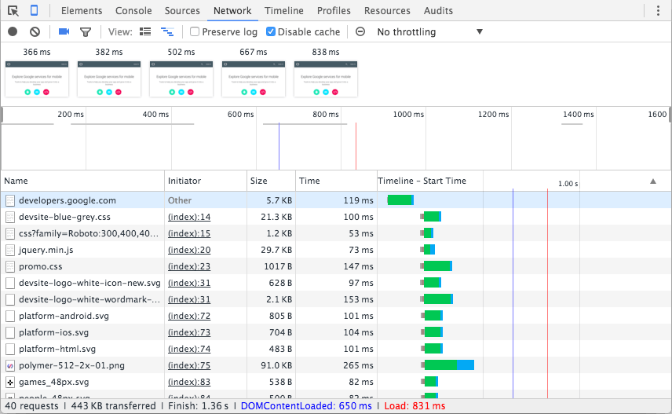

1) Elements
Utilizada basicamente para iteração do layout através da manipulção do DOM e do CSS.
Através do recurso "Inspect Element" você pode iterar por todos os nós do seu DOM, acrescentar ou remover objetos do seu HTML e editar as propriedades de CSS através da coluna lateral.
Um recurso muito utilizado é o fato de que podemos "forçar" o estados dos elementos (hover, active, etc).
2) Console
O Console permite que você utilize instruções JavaScript e comandos específicos de forma dinamica, o que auxilia depurar erros na página.
Ele nos permite interagir com a aplicação através de comandos e através de logs que nos auxiliam a depurar erros.
3) Source
É onde fica localizado os arquivos fontes de nosso projeto.
Parecido com um editor, você pode editar seus arquivos e posteriormente exporta-los.
Você também tem acesso a um histórico das modificações feitas nos seus arquivos.


4) Network
Use o painel de Network para obter insights sobre as requisições solicitadas e baixadas e otimizar o desempenho de carregamento da página.

5) Timeline
Use a Timeline (linha do tempo) para melhorar o desempenho e tempo de execução da sua página explorando os vários eventos que aconteceram durante o ciclo de vida de sua aplicação.
Não assuma o desempenho é tão simples como seguir um simples conjunto de prós e contras. As regras podem mudar, e é fácil de usar regras de forma incorreta. Concentre-se no que o usuário em primeiro lugar. Como os usuários percebem atrasos supera de longe todas as diretrizes de desempenho.
RAIL: é um modelo de desempenho centrada no usuário e significa: Response, Animação, Inative, e Load.

6) Profiles
Use o painel de perfis se precisar de mais informações do que a Timeline pode fornecer, por exemplo, para rastrear vazamentos de memória.
7) Resources
Use o painel de Recursos para inspecionar todos os recursos que são carregados, incluindo:
- - Bancos de dados SQL Web;
- - Armazenamento local de sessão;
- - Cookies;
- - Folhas de cache de aplicativos;
- - Imagens, fontes e folhas de estilo

8) Security
Use o painel de segurança para depurar problemas de conteúdo misto, problemas com o seu certificado e muito mais.